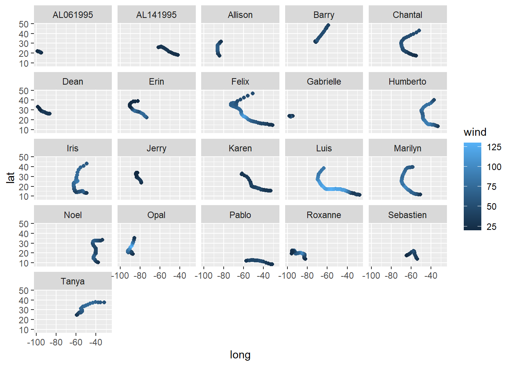

Goal: by the end of this lab, you will be able to use colorbrewer and ggthemes to customize the look of your visualization.
Setting up
For this lab, we’re going to be using the ToothGrowth dataset, which is one of the example datasets included in R. It contains data on how fast guinea pigs’ teeth grow if you give them vitamin C supplements in various forms and at various doses. You can learn more about this dataset by typing ?ToothGrowth at the console.
len supp dose
Min. : 4.20 OJ:30 Min. :0.500
1st Qu.:13.07 VC:30 1st Qu.:0.500
Median :19.25 Median :1.000
Mean :18.81 Mean :1.167
3rd Qu.:25.27 3rd Qu.:2.000
Max. :33.90 Max. :2.000
Hmm…the dose column looks a little funny. There are only three dosage values [0.5, 1 ,2], but R is interpreting them as continuous. We can tell R that we want to convert them to categories (a.k.a. factors) using dplyr like this:
len supp dose
Min. : 4.20 OJ:30 0.5:20
1st Qu.:13.07 VC:30 1 :20
Median :19.25 2 :20
Mean :18.81
3rd Qu.:25.27
Max. :33.90
Much better! Now let’s draw a graph.
Drawing a ggplot
Remember the basic recipe for building a plot with ggplot2? Don’t forget to load the library!
Make a boxplot of the ToothGrowth data, with x = dose, y = len, and fill = dose. Store it in a variable called my_plot.
# sample solutionmy_plot <-ggplot(ToothGrowth, aes(x = dose, y = len, fill = dose)) +geom_boxplot()
Changing colors manually
The default colors R selects are okay, but maybe we can do better. Let’s try using colors from the official Smith College Color Palette. We can specify the color values we want using scale_fill_manual() like this:
That looks pretty nice, but we could spend an awful lot of time making tiny tweaks to color palettes. Luckily Cynthia Brewer over at ColorBrewer has come up with some really good ones we can borrow! Let’s load the RColorBrewer library and check it out. Note: you might need to install.packages('RColorBrewer') if you’re running R on your laptop.
library(RColorBrewer)display.brewer.all()
Ooh, so many choices! We can now use these palettes along with scale_fill_brewer() to make perceptually-optimized plots:
To make the plot easier to read, we will first filter the storms data frame to include only storms from 1995.
my_storms <- storms %>%filter(year ==1995)
Plot the storms in my_storms, mapping horizontal position to longitude, vertical position to latitude, and color to wind speed. Also use a facet_wrap() to make small multiples according to the name of each storm.
# sample solutionggplot(my_storms, aes(x = long, y = lat, color = wind)) +geom_point() +facet_wrap(~name)

Do you think a sequential or diverging color scheme is most appropriate for wind speed? Justify your answer.
Stylizing using ggthemes
If we want even more control, we can use the ggthemes package to define not only the color palette, but the overall style of the plot as well. For example, if we want the minic the style used by the graphic design team at The Economist, we could say:
Notice how the background changed colors, the axes were re-styled, and the legend changed positions? You can read more about available ggthemes and scaleshere.
Putting it all together
Now it’s time to get creative! There are many more datasets available in R. Let’s take a look at what we’ve got to play with:
data()
You can learn more about any of the datasets by running ?<dataset> at the console (replacing <dataset> with the name of the dataset).
Use ggplot to draw a plot of any dataset you like, and style it. Try combining both a theme and a color palette.